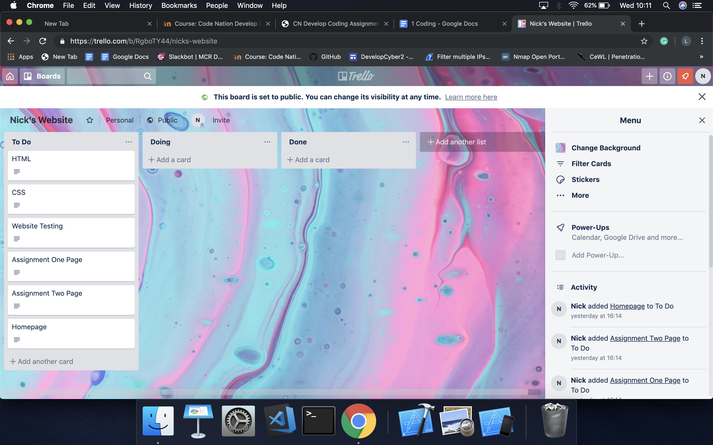
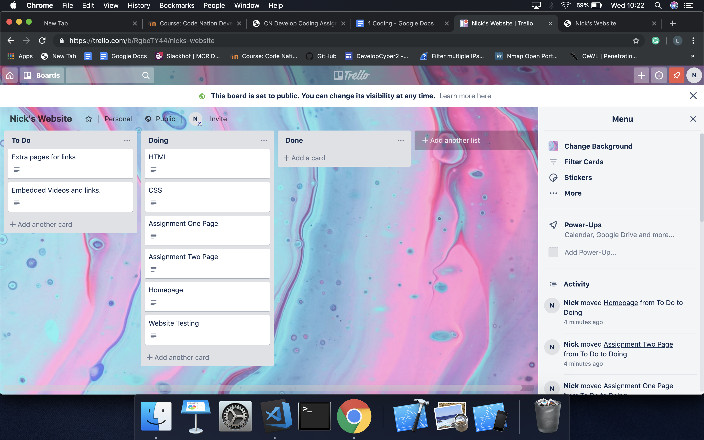

I.T. in modern business is very important. There's several reasons why this is the case. One of which is that data can be found and processed a lot quicker. This means businesses can function faster for their customers and reach a higher number of customers. I.T. is also important in protecting networks spotting cyber threats is very important businesses are always concerned in protecting their customers information.
To complete a digital process successfully, it takes a lot of skills and relevant equipment. If you were working on a project then you will need to make sure your hardware and software meets the requirements of the task in hand. The list below explains this in more detail.
Out of date software on the programs you are using means that the task will be much harder. The program is much slower than it could be.
If you install a program onto a computer such as iMovie and the processor isn’t powerful enough then this means the program will not run properly or it will not run at all. Having a powerful machine to run your project is essential in business.
Leading your team in business is highly important. This ensures that the task at hand is finished as quickly and efficiently as possible. Failure to plan leads to the project being completed slowly or not at all.
This program can interpret and create several different computer languages. This has the required language for my assignment HTML and CSS
CSS creates makes the makes the website more presentable and HTML is the main component.
This is a browser that I will use to test my website on. This will allow me to see if my lines of code are correct. It is important to test any changes I make to the site otherwise it can lead to problems.
This is a tool used to create boards and cards on those boards. This is essential to make my project successful because it manages what I have to plan, what I have done and what is left to finish. I can also leave notes on each card.
This is used to chat to my colleagues and teachers. This tool is very useful as I can communicate with my teachers out of business hours. This means if i’m at home then I can always speak to my teachers if I have questions.
The macbook that I am using uses an i5 processor and has 8gb of RAM. I have also made sure its updated with the latest version of iOS. The hardware is powerful enough to run everything i need.
I included an extended monitor. This is because it makes it easier to see what i’m doing. I can put the visual code onto one screen and the trello and chrome on another screen.
I will now show the method i will use to plan my website. I will present to most efficient way I could think of using the equipment mentioned in 1.2. I used Trello to plan my website design. The screenshot of my Trello board is below.

As you can see the to do board is filled with all my ideas for the website the doing board would be filled later on. The Doing section is presented below.

As you can see above, the Doing section is everything that I wanted to present on the website. I had to leave “Extra Pages” and “Embedded Videos and Links” because it is very complicated and I did not have enough time. Finally, I finished my main priorities which was HTML,CSS and the assignment pages.
As you can see, the homepage and the website testing is in the doing board. This is because these were the last most important parts of my assignment. I had to make sure the home page was designed properly last and I had to test that the links work to the assignments page and. After the website was made I eventually added those two cards to the done board. The testing was also done using Google Chrome. Everytime changed a tag, I would click the link on chrome to see if it was altered.
Projects can be disputed in a company. This can lead to delays in the project being finished.
If a company does not plan their time properly then this can lead to the project in question not being finished on time for a client. This could be from certain members not reaching deadlines.
Once the project is finished it may not be working correctly. This is due to team members in the company not testing their projects before declaring them finished.
If the head of the department is not fully aware of what the project entails or its intended use then its highly unlikely the project will even get started. These issues can be a major problem in digital projects.
I chose Trello over Taiga because after examining both I know that Trello has more features. On Trello you can get more boards for free and there are more parameters that you can change.
I chose Google Chrome because I have a Google account. This means I can keeps bookmarks on all of my sites that I use such as Trello, Slack, GitHub, Moodle, and all the bookmarks that I wish to save. This means that if I go home I can still login to all of my accounts with the Google login. This saves time as I don't need to remember several logins and passwords.
I used GitHub over Bitbucket because it is much more popular. This means that any queries that I have about using it, I can find answers online much easier. I can also upload and download repositories faster as the process isn't as complicated as Bitbucket.
I used VScode over other editors because with VScode it has several languages. In one program. This includes Python, JavaScript, Java, HTML, CSS and many more.
There are other programs that only deal with one computer language. If i was to chose them I would have to open each one every time I opened my computer. VScode eliminates this problem.
As you can see from the picture below, Trello allowed me to edit and change cards that I created. In my HTML card I could put what I wanted to include in my HTML file.
This is very useful to achieve my outcomes because it allows me to outline my plan. I can also edit and remove things that had been achieved in the HTML plan. I did this in trello for all of my cards (CSS,page plan etc)
The GitHub website is useful in many ways. One of the main reasons I could achieve my outcomes for my website easier is because I could sync my site to the Visual studio code.
This means that I could save any changes I made and then open GitHub at home. I achieved this by doing the following in the terminal section.
($ git status)
$ git add .
$ git commit -m “your commit comment”
($ git status)
$ git push origin master
This sequence saves any changes I have made.
GDPR stands for General Data Protection Regulation. GDPR is an essential law that governments enforce. This is because it regulates what companies use individuals information for. GDPR impacts digital projects because companies must make sure any projects they are working on are regulated in accordance with the law. If they create an app that is not secured, the company must make sure their engineers and relevant support staff are capable of updating the software that it is secured.
After analysing what tools that I needed to created my website, it was now time to create it
I was more than happy with the tools I had chosen. There were however a few things that I would like the programs to improve on. Here are the examples listed below.
The Trello free version only allows 10mb of free files. This means that If you I had more that 10mb of files I would have to create another free account and place them in there which is highly inconvenient. It also only has 2 factor authentication. This makes my trello site much more vulnerable to attacks from unknown sources. If this was a website for a client then sensitive information would be at risk.
This site has a slackbot. This is a personal assistant which can help with questions.
The slackbot wasn't very accurate when asking it questions and it would either not understand what you asked it or give you a different unrelated answer.
This program only allows you to create new files and only name them once they are created. This is a tedious issue as it means making new files takes longer.
Making repositories is a lot more complicated than I thought. It takes a lot more steps than I originally thought. I also had issue with drag and drop methods as it would not sometimes work on the first try.
After I finished my website, I was happy with it This is because it was a very basic website and not much else was needed for the task at hand. There are a few things that I would like to change.
Rather than the same style on each page i would improve it by making different text for titles and subheadings. This style for titles. This title for Sub-headings.
I would use more colours on the site as this shows that I have more range in styling a website. The colours for the text, titles, and subheadings could be different colours.
I would style the margins in a more flamboyant fashion. This would make the site much more appealing to a viewer. This method however takes a lot more practice and time. This would include text wrapping and sizing. Rather than the text being in one line it could be in different positions.
As you can imagine, I didn’t have time to implement everything that I wanted to. Further improvements that I would have made are as follows.
I would embed videos showing my projects taking place. This would further show my skills on how to create a website.
I would make more pages for the “about me” section. I would create the homepage with 3 tabs; Assignment 1, Assignment 2 and About me, instead I had to settle with the “about me” section being the main page.
After reviewing the website, I had to make sure that I knew what the exact outcomes were
and if they were fit for purpose. Everything I did and checked is in a list below.
The buttons on the site work. The assignment 1 and assignment 2 button work because it sends you to the correct pages. The “go to homepage” button on both pages was also working correctly.
The margins were all in line. This was a difficult tasks as i kept trying to do this using HTML. I later realised that i did not need to do this in HTML as CSS is the much easier place to organise position and style.
The HTML and CSS are complying with each other this is because I have created the following command in HTML
This allows me to make changes and alter the cosmetics of the site.
The HTML and CSS have been removed of all errors. There was one error on HTML that meant the font could not be changed to heading 1 or heading 2. This was because the command line was fixed correctly. I did research to find it.
All the images are in line and the desired size. I placed the images on CSS and positioned them accordingly.
As you can imagine there are many steps I can take to make my website quicker and more efficient.
To do it in a team I would delegate different members to do different tasks.
If my team was a group of 3 people then i would task one person for each page. One for assignment, one for assignment 2 and one for the homepage “about me” section.
I would also allow the best.
I would also designate a team leader. This prevents any complications of who is leading the project and that person can decide where the project goes.
The three of us would need to communicate as there will be situations where we will be apart from each other. If one of us was ill, then we can send the person all the notes that we covered in the session. This means that no one is left behind. Another situation is that if one of us need to speak to the other for notes or any questions they have the it’s easily done. I would also make sure we used a Trello board. This is because Trello is useful for us to realize how far we are with our projects. And what needs to be done.
Productivity is very important in creating the website. As I mentioned before there were a few things that I wanted to add to the website. I wanted to embed a video to youtube explaining the about me section. I also wanted to make the site more elaborate by making more buttons to more pages.
These ideas eventually had to be cut due to time constraints. I was spending far too much time on the HTML to ensure it was correct. If I was to ensure these things were included in my website then I would make sure that my HTML code was tested and finished a lot faster on each page so I can reach the deadline.
In my personal opinion, I would not use a team to create my own website. This is because I have the relevant knowledge to produce a website on my own. Any questions or queries that I have I can simply look for the solution online myself or go the library and discover it there.
If I need to speak to anyone about my project then I would rather go to online forums such as reddit or GitHub chat.
The ways that I went about testing my site were as follows. I tested the website on different browsers. I would go about testing digital solutions by opening the website in Chrome, Safari, Firefox and Opera. This will ensure it is operating properly on all of these. If not the the issue must be addressed as soon as possible. The platforms include Macbooks, Windows PC’s, iPads, Android Tablets, iPhones and Android Phones. As I was limited by time constraints I tested on a Macbook Pro and my Android phone. Some screenshots of the testing that I carried out are below.
The resutls of what my website looked like on my android phone are shown in images below.